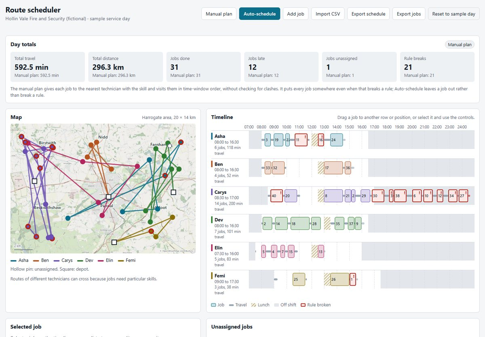
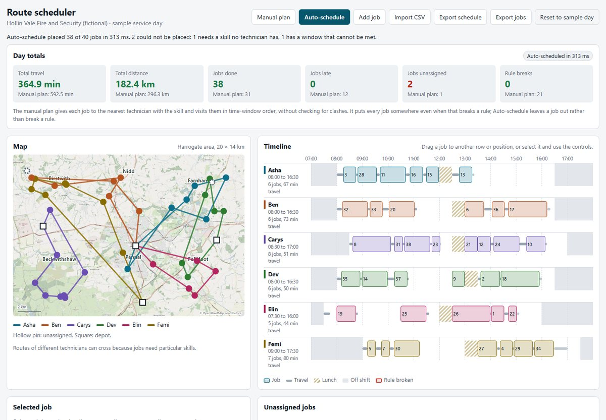
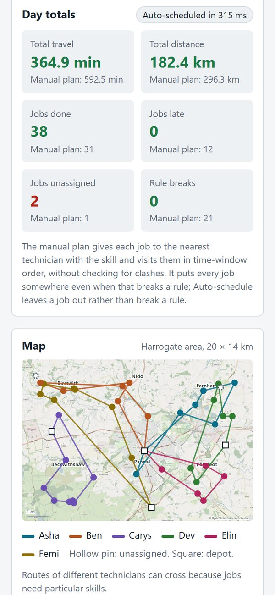

The problem
A fire and security servicing firm books a high volume of jobs by dragging each one onto a calendar by hand. They want jobs assigned to the right technicians automatically, in an order that cuts driving time and keeps visits on time.
What it does
- Builds a full day plan that respects skills, time windows, working hours and lunch
- On the sample day: 38 of 40 jobs placed, 0 late, 364.9 min travel, against 31 done, 12 late and 592.5 min for a manual plan
- Shows routes on a real map of the Harrogate area and a timeline per technician
- Lets the planner drag jobs between technicians and flags any rule a move breaks
- Explains in plain words why a job cannot be placed
- Imports and exports jobs as CSV and exports the schedule, reporting bad rows by line number
Before and after on the sample day
The baseline is a sensible manual plan, and the main gain is no late jobs and no rule breaks, with less travel as well.




| Measure | Manual plan | Auto-schedule |
|---|---|---|
| Total travel | 592.5 min | 364.9 min |
| Total distance | 296.3 km | 182.4 km |
| Jobs done | 31 | 38 |
| Jobs late | 12 | 0 |
| Jobs unassigned | 1 | 2 |
| Rule breaks | 21 | 0 |
Try it
This is the working app, not a recording. It runs entirely in your browser with sample data.
It opens on the manual plan. Press Auto-schedule to see the planned day.
More screenshots

How to run it
python -m http.server 8000Open http://localhost:8000/index.html
node --testFull instructions are in the README.md file in the project's route-scheduler folder.
Tools used
- HTML
- CSS
- JavaScript (ES modules)
- SVG
- Node.js test runner
- Playwright
Honest limits
- No road routing or traffic. Distances are straight lines times a fixed factor; the map is a background, and its roads and rivers do not affect travel.
- One day at a time. No multi-day jobs, follow-up visits or parts stock.
- Technicians and their hours are fixed sample data. They can only be changed in the code.
- Lunch is a fixed slot, not a flexible break.
- The method finds a good plan quickly. It does not prove the plan is the best possible.
- It is sized for tens of jobs. With hundreds of jobs and 6 technicians most cannot fit into one day; how many fit depends on the list, and the status line gives the real count and the reasons. Hundreds of jobs would need more technicians and a faster method.
- There is no login, server or shared data. Each browser keeps its own copy.
All data in this sample is fictional.